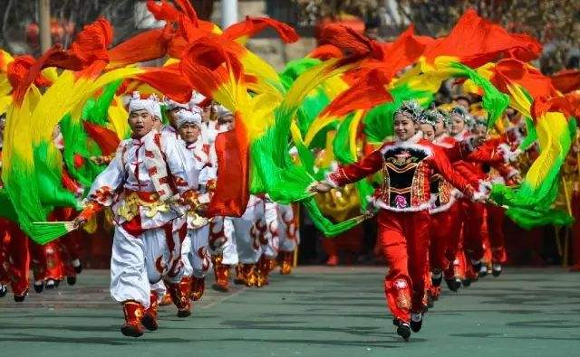

陕西部分非物质文化遗产
-
兵马俑
兵马俑是古代墓葬雕塑的一个类别。古代实行人殉，奴隶是奴隶主生前的附属品，奴隶主死后奴隶要作为殉葬品为奴隶主陪葬。兵马俑即制成兵马（战车、战马、士兵）形状的殉葬品。 -
半坡遗址
2002年－2005年，配合半坡遗址保护大厅改造工程建设的随工清理中，发现了祭祀等重要遗迹和石砚等重要遗物，这对半坡遗址的聚落形态、文化内涵和社会性质研究具有重要价值 。 -
华阴老腔
华阴老腔是明末清初，以陕西省华阴市，久为华阴市泉店村张家户族的家族戏（只传本姓本族，不传外人）。其声腔具有刚直高亢、磅礴豪迈的气魄，非常追求自在、随兴的痛快感，听起来颇有关西大汉咏唱大江东去之慨，此类表演方式也被誉为黄土高坡上“最早的摇滚” -
大唐芙蓉园
大唐芙蓉园位于陕西省西安市城南的曲江开发区，大雁塔东南侧，它是在原唐代芙蓉园遗址以北，仿照唐代皇家园林式样重新建造的，是中国第一个全方位展示盛唐风貌的大型皇家园林式文化主题公园，占地面积一千亩，其中水域面积三百亩。 -
大明宫
大明宫，大唐帝国的大朝正殿，唐朝的政治中心和国家象征，位于唐京师长安（今西安）北侧的龙首原。始建于唐太宗贞观八年（634年），原名永安宫，是唐长安城三座主要宫殿“三大内”（大明宫、太极宫、兴庆宫）中规模最大的一座，称为“东内”。自唐高宗起，先后有17位唐朝皇帝在此处理朝政，历时达200余年。 -
大雁塔
大雁塔作为现存最早、规模最大的唐代四方楼阁式砖塔，是佛塔这种古印度佛寺的建筑形式随佛教传入中原地区，并融入华夏文化的典型物证，是凝聚了中国古代劳动人民智慧结晶的标志性建筑。 -
安塞腰鼓
安塞腰鼓可由几人或上千人一同进行，磅礴气势，精湛的表现力令人陶醉，被称为天下第一鼓。1996年，延安市安塞区被国家文化部命名为中国腰鼓之乡。 -
秦始皇陵
秦始皇陵建于秦王政元年（前247年）至秦二世二年（前208年），历时39年，是中国历史上第一座规模庞大，设计完善的帝王陵寝。有内外两重夯土城垣，象征着帝都咸阳的皇城和宫城。 -
秦腔
古时陕西、甘肃一带属秦国，所以称之为“秦腔”。因为早期秦腔演出时，常用枣木梆子敲击伴奏，故又名“梆子腔”。秦腔成形后，流传全国各地，因其整套成熟、完整的表演体系，对各地的剧种产生了不同程度的 影响，并直接影响了梆子腔成为梆子腔剧种的始祖。秦腔的表演技艺朴实、粗犷、豪放，富有夸张性，生活气息浓厚，技巧丰富。 -
西安钟鼓楼
西安钟楼和西安鼓楼的合称，位于西安市中心，是凝聚了古代汉族劳动人民智慧与力量结晶的标志性建筑物，西安鼓楼始建于明洪武十三年公元1380年。 -

陕北秧歌
陕北秧歌是流传于陕西陕北高原的一种具有广泛群众性和代表性的地方传统舞蹈，又称"闹红火"、"闹秧歌"、"闹社火"、"闹阳歌"等。它主要分布在陕西榆林、延安、绥德、米脂等地，历史悠久，内容丰富，形式多样。其中绥德、米脂秧歌最具代表性。